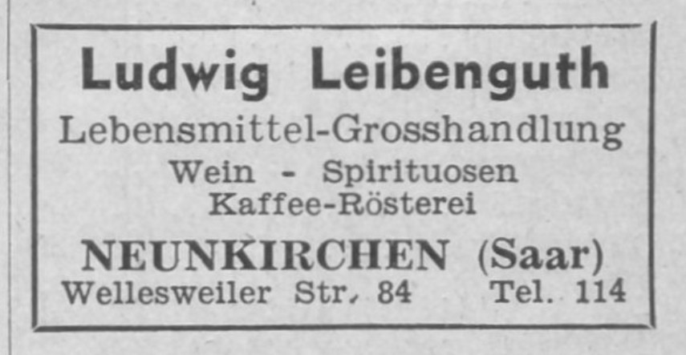

Gruss vom Bahnhof Neunkirchen
Die Familie Schlessmann Teil 4
Wenn die Unmassen von Rauch aus den Fabrikschornsteinen und Öfen nicht wären, könnte man den Ort idyllisch nennen.
- Richard Dehmel über Neunkirchen, 1883
Ordnung ist das ganze Leben
Unser Vorfahre Friedrich Karl Schlessmann, mit Rufnamen Karl, wurde am 6. Juni 1813 um sechs Uhr morgens in Neunkirchen geboren. Mit ihm begann die beste Zeit für die Familie Schlessmann in Neunkirchen. Der Mann machte alles richtig: Er erlernte das Schmiedehandwerk, das ihm ein hohes Ansehen und ein gutes Einkommen garantierte, er heiratete die Tochter eines Bauern, die in der Lage war, bei seiner Landwirtschaft mitzuhelfen, und es gelang ihm, die meisten seiner Kinder bei sich in Neunkirchen zu behalten und für ihre sichere Zukunft zu sorgen.All das hätte nicht funktioniert, wenn Karl nicht so unglaublich gross und stark gewesen wäre - in jeder Beziehung. Seine Körperkraft wurde nur noch von seiner Willensstärke übertroffen. Davon später mehr.
In Frankreich um 1836
Wanderjahre
Wir wissen nicht, wo und bei wem Karl Schlessmann seine Schmiedelehre absolviert hatte, aber als Schmiedegeselle ging er für mehrere Jahre auf Wanderschaft in Deutschland und Frankreich und wenn er bei Laune war, erzählte er seinen Kindern und Enkeln von seinen Erlebnissen und Abenteuern. Zu jener Zeit war die Wanderschaft noch verpflichtend, wenn ein Handwerker Meister werden wollte. Die Gesellenwanderschaft war durch die Gewerbeordnung reglementiert, aber im Prinzip konnten die Handwerksgesellen wandern wohin sie wollten. Ein Wanderbuch dokumentierte ihre Aufenthaltsorte.Zeitgenössische Autoren priesen die Vorteile der Wanderschaft, insbesondere die Möglichkeit, neue Fähigkeiten und Techniken zu erwerben, andere Gegenden und Gebräuche kennenzulernen und sich generell zu bilden und kultivieren. Wirklich problemlos war die Wanderschaft meistens aber nicht, denn die Gesellen waren darauf angewiesen, eine Bleibe zu finden und bei einem Meister des Handwerks eine zeitweilige Stellung zu erlangen. Auch wenn das Reisen nicht ohne Widrigkeiten und Gefahren war, genossen die jungen Handwerker ihre Freiheit.
Wanderbuch von 1832
Mühen, Beschwerden, Entbehrungen mancherlei Art hat er freilich zu tragen, aber er trägt sie leicht, denn er ist jung und gesund und er ist auf der Wanderschaft sein eigener Herr: auf niemand hat er zu hören, niemand Rechenschaft zu geben; jedem Einfalle kann er folgen; blauer Himmel und Sonnenschein oder auch Schnee und Regen hat größeren Reiz als die dumpfe Luft der Werkstätte.
An jedem Tage hat er andere Gesellschaft, bald diesen, bald jenen Reisegenossen, bald diesen, bald jenen Eindruck, bald Entbehrung, bald Genuß in raschem Wechsel; andere Städtchen, andere Mädchen.
- Das Herbergswesen der Handwerksgesellen 1856
An jedem Tage hat er andere Gesellschaft, bald diesen, bald jenen Reisegenossen, bald diesen, bald jenen Eindruck, bald Entbehrung, bald Genuß in raschem Wechsel; andere Städtchen, andere Mädchen.
- Das Herbergswesen der Handwerksgesellen 1856
Spätestens im Jahre 1838 hatte Karl seine Wanderschaft abgeschlossen und war nach Neunkirchen zurückgekehrt, denn im August 1838 meldete er den Tod seines Bruders Jacob und den seiner Mutter Philippine. In Jacobs Sterbeeintrag wird sein Beruf als Schmied angegeben, aber in dem seiner Mutter ist er als Hüttenarbeiter aufgeführt. Wahrscheinlich übte er zu diesem Zeitpunkt noch beide Tätigkeiten aus. Karl war nun der einzige Mensch mit dem Namen Schlessmann in Neunkirchen.
In dieser Situation blieb ihm nichts anderes übrig, als sich eine Frau zu suchen, aber es dauerte zwei Jahre, bis er die Richtige gefunden hatte.
Karl Schlessmann und Elisabetha Dorst
Karl heiratete am 19. Mai 1840 im Alter von 27 Jahren die fünf Jahre jüngere Elisabetha Dorst (1817-1879) aus Wellesweiler, die Tochter des Landwirts Johann Jacob Dorst (1774-1836) und dessen Frau Maria Wilhelmina Wagner (1775-1847), deren Vater Schmied gewesen war. Wellesweiler war damals ein kleines Dorf mit etwa 600 Einwohnern, die vom Ackerbau und der Arbeit in der Wellesweiler Kohlengrube lebten.
Unterschrift von Karl und Elisabetha bei der Heirat
Die Familien Dorst und Wagner gehörten zu den ältesten Familien im Raum Neunkirchen und waren daher bereits mit sämtlichen anderen alteingesessen Familien verwandt. Karl, und vor allem seine Kinder, die vorwiegend in weitere "alte" Familien einheirateten, hatten so eine ganze Heerschar von Verwandten in ihrem Heimatort. Die typischen Neunkircher Namen, wie Anschütz, Eisenbeis, Hollinger, Leibenguth, Russi, Schmelzer, Werner, Wolfanger und Zwalla finden sich in unserem Stammbaum.
Wellesweiler an der Blies
Interessant und ganz und gar ungewöhnlich ist es, dass in dem Heiratseintrag nicht nur Karls Mutter, Philippine Lichtenberger, erwähnt wird, sondern auch sein Großvater, der Pfarrer Christoph Lichtenberger. Offenbar hatte man Karls illustre Herkunft nicht vergessen.
Eine Bauerntochter zu heiraten war eine kluge Entscheidung. Elisabetha war nicht gänzlich ungebildet; sie hatte bis zu ihrem 14. Lebensjahr die Dorfschule in Wellesweiler besucht. Sie war aber von Kind an daran gewöhnt, im Stall und auf dem Feld zu arbeiten, sie stellte keine überhöhten Ansprüche und konnte einen Haushalt führen.

Grube König Neunkirchen
Blick auf Neunkirchen
Ein Industriegebiet ersten Ranges
Karl und Elisabetha hatten sieben Kinder, von denen zwei früh verstarben. Während die Schlessmann-Kinder aufwuchsen, wuchs auch Neunkirchen, und zwar rasant: Im Jahre 1840 hatte der Ort 2144 Einwohner, 1880 schon 15.423 und 1925 waren es 40.429. Neunkirchen zu jener Zeit war dominiert von ständig wachsenden Industrieanlagen mit rauchenden Schornsteinen, die durchaus positiv bewertet wurden.
Das Eisenwerk der Gebrüder Stumm war lange Zeit verantwortlich für den enormen Zustrom an Arbeitern nach Neunkirchen. "Geh uff die Hidd, Bub, dort bischde gudd unner" war und blieb der beste Ratschlag für junge Männer. Seit 1820 gab es auch das Steinkohlenbergwerk, die Grube König, die zahlreiche Arbeiter mit ihren Familien anzog. Verstärkt wurde der Effekt durch den Bau der Eisenbahn. Neunkirchen bekam seinen ersten Bahnhof im Jahre 1852 und war von nun an mit der Welt verbunden.
Wir befinden uns hier in einem Industriegebiete ersten Ranges, im Kohlenreviere der Saar, wo zahllose rauchgeschwärzte Kamine an die stille Thätigkeit des Bergmanns im Innern der Erde erinnern, wo uns nach allen Richtungen lange Kohlenzüge auf den Eisenbahnen entgegenkommen, während die Saar mit Kohlenschiffen bedeckt ist, welche die „schwarzen Diamanten“, auch treffend „Brot der Industrie“ genannt, entweder nach Lothringen und Frankreich, oder zur Mosel führen. Da sich, wie gewöhnlich, den Kohlenbergwerken auch Hüttenwerke zugesellen, so finden wir z.B. bei Neunkirchen, einem Kreuzungspunkte mehrerer Eisenbahnen, das großartige Etablissement der Gebrüder Stumm, mit seinen vielen Hochöfen, Walzwerken, Eisenhämmern usw., ferner eine Dampfkessel- und Maschinenfabrik, ein Dampfsägewerk und einige Fabriken. Überall herrscht die regste Thätigkeit, sehen wir geschäftige Menschen hin und her eilen, rastlos thätig im Dienste der materiellen Produktion.
- Unser Deutsches Land und Volk, 1880
All diese neuen Bürger mussten untergebracht werden, was in einem vollkommen unkoordiniertem Häuserbau für die Arbeiter resultierte. Im Laufe der Zeit bildeten sich zwei "Parallel-Welten": Die protestantischen "alten" Familien und die "Zugezogenen", bei denen es sich meistens um Katholiken aus ländlichen Regionen handelte. Die Herren Stumm waren evangelisch und bevorzugten evangelische Mitarbeiter für die Leitungspositionen.
- Unser Deutsches Land und Volk, 1880
Die alteingesessenen Familien profitierten auch in anderer Hinsicht von der Situation, denn sie waren die Handwerker und Eigentümer der Geschäfte für den täglichen Bedarf, und vor allem Besitzer der unproportional grossen Anzahl von Gaststätten, in denen sich die Hütten- und Bergarbeiter "entspannten" und ihr schwer verdientes Geld ausgaben.
Der Schmied mit dem eisernen Willen
Werkzeuge des Schmieds
Alles, was aus Metall bestand, konnte er anfertigen: Nägel, Pflüge, Äxte, Sicheln, Hufeisen, Türschlösser, Beschläge, Hacken, Meissel und metallene Reifen für die Räder. Aber auch die Industrie benötigte Schmiedearbeiten. In der "Schmiede-Taxe" des Saarbrücker Bergamts von 1821 wird der Preis für die Herstellung und Reparatur jedes Werkteils aufgeführt.
Die Tätigkeit des "Meisters der vier Elemente" war Schwerstarbeit. Die Esse, also das Feuer, Amboss, Blasebalg, Hammer und Zangen waren alles was man in einer Dorfschmiede benötigte.
Der Schmied erhitzte das Feuer in der Esse mit Hilfe des Blasebalgs auf eine Temperatur von 1800 Grad und brachte das zu bearbeitende Eisen damit zur Weissglut. Mit Hilfe der Schmiedezange bearbeitete er das Eisen dann auf dem Amboss bis es die gewünschte Form hatte und kühlte es anschliessend in kaltem Wasser ab.
Schmied in seiner Werkstatt, 1836
Karl war im wahrsten Sinne des Wortes seines Glückes Schmied. Als junger Mann war er mehr oder weniger auf sich selbst angewiesen und gewöhnte sich daran, seine eigenen Entscheidungen treffen. In Friedrich Schlessmanns Familiengeschichte wird Karl als fleissig und sparsam beschrieben, aber auch als streng und sehr dominant, als jemand, der keinerlei Widerspruch duldete. Dies war wahrscheinlich eine Reaktion auf den allzu nachgiebigen Erziehungsstil seiner eigenen Eltern, deren Kinder sich nicht wirklich gut benahmen und ihnen davon rannten. Karl hatte einen starken Willen, so viel steht fest. Er war entschlossen, die Fehler seiner Eltern nicht zu wiederholen. Offenbar erzog er seine Kinder zu Gehorsam und Disziplin und traf die Entscheidungen für sie, zumindest so lange sie jung waren, und er tolerierte keinen Unfug. Seine Idee war, über alles die Kontrolle zu behalten. Der Plan ging auf.
Giebel des Hauses Marktstrasse 6 mit Hinterhof
Karl Schlessmann engagierte sich auch in der Gemeinde: "Klug, geschickt und wohl unterrichtet in allen Dingen des öffentlichen Lebens, wurde er in den Kirchen- und Gemeindevorstand gewählt" heisst es in der Familiengeschichte.
Als treusorgender Vater gelang es ihm, die meisten seiner fünf überlebenden Kinder bei sich in Neunkirchen zu behalten. Alle heirateten und bekamen Kinder. Bei der Wahl der Vornamen für seine Kinder war Karl wenig einfallsreich; Karl, Friedrich und Christian in unterschiedlichen Kombinationen war der Standard, den auch die folgenden Generationen beibehielten, und für die Töchter Elisabetha, Louise und Wilhelmine.
Die beiden älteren Söhne, Karl und Christian, wurden Schmied wie ihr Vater. Der jüngere Sohn Jakob wählte das Schreinerhandwerk. Die Tochter Louise heiratete einen Bergmann und die Tochter Wilhelmine einen Schreiner, mit dem sie in die USA auswanderte.
Die Mutter Elisabetha Schlessmann geb. Dorst starb am 10. März 1879 in Neunkirchen. Karl überlebte sie um 21 Jahre. Ihm war es vergönnt, die Geburten von 29 Enkeln mitzuerleben. Im Alter von 87 Jahren erfreute er sich immer noch bester Gesundheit. Er kam am 28. Juni 1900 durch einen Unfall beim Einspannen seines Pferdes ums Leben.
» Friedrich Karl Schlessmann (1813–1900)
heiratete Elisabetha Dorst (1817–1879) in Neunkirchen 19.05.1840
heiratete Elisabetha Dorst (1817–1879) in Neunkirchen 19.05.1840
und sie hatten die folgenden Kinder:
| Friedrich Karl Schlessmann | 12.05.1841 – *Neunkirchen |
25.09.1899 †Neunkirchen |
h. Maria Ecker in Neunkirchen 10.11.1868 | |
| Friedrich Christian Schlessmann | 23.07.1844 – *Neunkirchen |
24.05.1912 †Neunkirchen |
h. Wilhelmine Werner in Neunkirchen 02.04.1874 | |
| Elisabeth Louise Schlessmann | 29.07.1847 – *Neunkirchen |
02.03.1886 †Neunkirchen |
h. Friedrich Brück in Neunkirchen 12.01.1867 | |
| Christian Friedrich Schlessmann | 10.05.1850 – *Neunkirchen |
23.06.1852 †Neunkirchen |
(2 Jahre alt) | |
| Henriette Wilhelmine Schlessmann | 09.03.1854 – *Neunkirchen |
05.11.1886 †Chicago |
h. Christian Philipp Hollinger in Neunkirchen 05.03.1874 | |
| Georg Jakob Schlessmann | 16.01.1857 – *Neunkirchen |
02.04.1938 †Neunkirchen |
h. Caroline Fries in Nohfelden 01.07.1882 | |
| Elisabetha Caroline Schlessmann | 18.12.1859 – *Neunkirchen |
26.12.1861 †Neunkirchen |
(2 Jahre alt) |
Die Kinder von Karl und Elisabetha
» Friedrich Karl Schlessmann (1841–1899)
Friedrich Karl Schlessmann wurde am 12. Mai 1841 geboren. Er war Schmied, Fördermaschinist und Zechenschmied im Bergwerk Neunkirchen. Am 10. November 1868 heiratete er Maria Ecker (1848-1929), die Tochter des Schreiners Heinrich Ecker (1811–1892) und dessen Frau Anna Maria Russy (1812–1892) aus Limbach bei Bexbach. Die beiden hatten acht Kinder, von denen drei im Kindesalter verstarben.Friedrich Karl starb am 25. September 1899, neun Monate vor seinem Vater "nach kurzem Krankenlager". Seine Frau Maria überlebte ihn um 30 Jahre und zog irgendwann zu ihrer Tochter Luise nach Bildstock. Sie starb am 24. Dezember 1929 in der Wohnung ihres Schwiegersohnes Richard Gerhardt. Sie wurde aber, wie alle Familienmitglieder, auf dem Hauptfriedhof Scheib in Neunkirchen bestattet.
» Friedrich Karl Schlessmann (1841–1899)
heiratete Maria Ecker (1848–1929) in Neunkirchen 10.11.1868
Der Sohn Friedrich Karl Schlessmann (1872–1944) war Fördermaschinist und Marinesoldat. Er war in erster Ehe mit Frieda Elisabetha Münch (1876–1906) verheiratet, die aus Bruchmühlbach stammte, und in zweiter Ehe mit der Witwe Katharina Krämer geborene Weingardt (1872–1933). Von den vier Kindern von Friedrich Karl und Frieda Elisabetha erreichte nur die Tochter Friedel Luise (1899–1982) das Erwachsenenalter. Sie heiratete 1921 den Maschinisten Karl Friedrich Fried (1898–1963). Ihre Nachfahren leben immer noch in Neunkirchen.
heiratete Maria Ecker (1848–1929) in Neunkirchen 10.11.1868
und sie hatten die folgenden Kinder:
| Christian Schlessmann | 05.11.1869 – *Neunkirchen |
03.08.1870 †Neunkirchen |
(9 Monate alt) | |
| Friedrich Karl Schlessmann | 05.11.1869 – *Neunkirchen |
23.04.1870 †Neunkirchen |
(5 Monate alt) | |
| Friedrich Karl Schlessmann | 16.05.1872 – *Neunkirchen |
23.08.1944 †Neunkirchen |
h. Frieda Elisabetha Münch in Neunkirchen 1896 h. Katharina Weingardt in Neunkirchen 07.02.1907 |
|
| Karl Friedrich Schlessmann | 27.10.1874 – *Neunkirchen |
06.11.1957 †Homburg |
h. Emma Becker in Neunkirchen 30.09.1899 | |
| Elisabeth Maria Schlessmann | 13.12.1876 – *Neunkirchen |
01.03.1917 †Neunkirchen |
h. Andreas Jakob Eisenbeis in Neunkirchen 14.05.1895 | |
| Wilhelmine Schlessmann | 17.11.1878 – *Neunkirchen |
08.12.1878 †Neunkirchen |
(1 Jahr alt) | |
| Elisabeth Louise Schlessmann | 15.02.1883 – *Neunkirchen |
09.02.1963 †Bildstock |
h. Heinrich Dietrich 09.10.1904 | |
| Luise Schlessmann | 06.11.1887 – *Neunkirchen |
23.12.1953 †Bildstock |
h. Richard Gerhardt in Friedrichsthal 29.08.1912 |
Karl Friedrich Schlessmann (1874-1951) heiratete am 30. September 1899 die aus Wiebelskirchen stammende Emma Becker (1877–1959). Zu diesem Zeitpunkt lebte Friedrich bereits in Köln, wo er als Bergrevierbüroassistent arbeitete. Später wurde er Bergobersekretär und Ministerialrat. Anfangs wohnte er in der Bachemer Str. 76 in Köln Lindenthal und später in der Glockengasse 30, direkt neben dem Parfümgeschäft Kölnisch Wasser 4711. Karl Friedrich Schlessmann starb 1951 im Altenheim "Haus Abendfrieden" in Homburg und seine Frau Emma 1959 in Köln. Ihr Sohn Johannes Friedrich (1904-1983) war Kaufmann und mit Irma Schober (1906-1982) verheiratet, mit der er zwei Kinder hatte. Die Nachfahren leben in Köln und Hamburg.
Elisabeth Maria Schlessmann (1876–1917) heiratete 1895 den Uhrmacher Andreas Jakob Eisenbeis (1869-1952), mit dem sie sechs Kinder hatte. Sie wohnten in der Hüttenbergstraße 6 in Neunkirchen. Zu diesem Zeitpunkt hatte Andreas Jakob bereits seine eigene Uhrmacherwerkstatt in eröffnet.
Elisabeth Louise Schlessmann(1883–1963), die zweitjüngste Tochter, heiratete um 1904 den Grubenschlosser und Gastwirt Heinrich Dietrich (1883–1950) aus Bildstock. Der Familie gehörte das Gasthaus "Waldhorn", das älteste Gasthaus in Bildstock. Als im Jahre 1951 das sogenannte Dietrichsfeld verkauft wurde, ist auch "Elise geborene Schlessmann in Bildstock" als Besitzerin aufgeführt. Elise und ihr Mann hatten eine Tochter, die 1904 geborene Elisabeth, die mit einem Mann namens Fink verheiratet war.
Luise Schlessmann (1887–1953) zog ebenfalls nach Bildstock, wo sie 1912 den Heizer und Maschinenführer Richard Gerhardt heiratete.
» Elisabeth Louisa Schlessmann (1847–1886)
Neunkirchen um 1900
Louise und Friedrich hatten vier Kinder, drei Söhne, von denen einer früh starb, und eine Tochter. Louisa starb mit 39 Jahren am 2. März 1886 in Neunkirchen. Die jüngste Tochter Louisa war zu diesem Zeitpunkt erst 13 Jahre alt. Louisas Mann Friedrich blieb bis zum Lebensende Witwer. Er starb im Alter von 65 Jahren am 5. April 1906 in Neunkirchen.
» Elisabeth Louisa Schlessmann (1847–1886)
heiratete Friedrich Brück (1841–1906) in Neunkirchen, 12.01.1867
heiratete Friedrich Brück (1841–1906) in Neunkirchen, 12.01.1867
und sie hatten die folgenden Kinder:
| Friedrich Brück | 21.01.1869 – *Neunkirchen |
1938 †Reckershausen |
h. Maria Koch in Neunkirchen, 04.07.1893 | |
| Karl Brück | 05.06.1871 – *Neunkirchen |
17.10.1943 †Saarbrücken |
h. Maria Kleber in Völklingen 06.06.1900 | |
| Sophia Brück | 22.08.1873 – *Neunkirchen |
24.01.1943 †Berlin |
h. Ernst Stumm um 1895 | |
| Adolf Brück | 15.05.1877 – *Neunkirchen |
03.06.1877 †Neunkirchen |
(19 Tage alt) |
Der älteste Sohn Friedrich Brück (1869–1938) heiratete 1893 die aus Neunkirchen stammende Maria Koch (1872-1938), deren Bruder Friedrich Koch (1874–1929) nach Chicago auswanderte. Friedrich Brück starb 1938 in Reckershausen. Seine Frau Maria starb im selben Jahr in Merzig.
Karl Brück (1871–1943) war Ober-Bergamtsmarkscheider, also ein Vermessungsingenieur. Er lebte bei seiner Heirat am 6. Juni 1900 mit Maria Kleber (1873-1961) in Breslau, wo er mit seiner Frau noch bis 1904 in der Marktstrasse 22 wohnte. Die Familie kehrte später nach Saarbrücken zurück.
Sophia Brück (1873–1943) heiratete 1895 den Markscheider und Vermessungsingenieur Ernst Stumm (1869–), dessen Vater aus Rhaunen in Rheinland-Pfalz stammte. Ernst Stumm erhielt seine Konzession zum Markscheider im Jahre 1894 in Bonn und nahm dann seinen Wohnsitz in Neunkirchen. Später arbeitete in einer deutschen Kolonie in Rostov am Don in Russland.
Rostov am Don
Das Sterbedatum von Sophias Mann Ernst ist unbekannt, aber bei ihrem Tod war sie Witwe und der letzte Wohnsitz ihres Mannes wird in ihrem Sterbeeintrag und dem ihres Sohnes als Rostov angegeben.
» Henriette Wilhelmine Schlessmann (1854–1886)
Henriette Wilhelmine Schlessmann, genannt Wilhelmine, wurde am 9. März 1854 geboren und heiratete am 5. März 1874 in Neunkirchen ihren Großcousin Christian Philipp Hollinger, geboren am 2. Januar 1848. Sein Vater war der Ackerer und Fuhrunternehmer Christian Hollinger, dessen Frau Louise Catherine Werner die Schwester von Johann Valentin Werner war, dem Vater von Wilhelmine Werner, die ihrerseits mit Wilhelmines Bruder Christian Schlessmann verheiratet war. Christian und Wilhelmine lebten in Neunkirchen auf dem Hundshof, einer Straße am Oberen Markt in Neunkirchen. Sie hatten vier Kinder, einen Sohn und drei Töchter. Der Sohn Christian Philipp verstarb 1881 im Alter von sieben Jahren.Chicago Canal Street 1890
Wenige Jahre später wanderte die Familie Hollinger nach Amerika aus. Christian zog zuerst allein los. Er kam am 28. November 1882 auf dem Schiff "Pennland" in New York an. Wilhelmine und ihre drei kleinen Töchter Wilhelmine, Katharina und Bertha erreichten New York am 21. Juli 1883 auf der "Switzerland", die von Antwerpen gestartet war. Von New York zogen sie dann nach Chicago.
Dies war wahrscheinlich kein Zufall, denn in Chicago hielten sich zu diesem Zeitpunkt bereits mehrere Verwandte auf: Die Brüder von Karl Eduard Ludwig Gerard (1845–1919), der mit der Familie Schlessmann eng befreundet war und dessen Sohn Eduard später Wilhelmines Nichte Bertha Schlessmann heiratete, die Tochter von Wilhelmines jüngerem Bruder Jakob. Ein weiterer Verwandter in Chicago war der oben erwähnte Friedrich Koch, der Bruder der Ehefrau von Wilhelmines Neffen Friedrich Brück, der um das Jahr 1900 ganz in der Nähe der Hollinger-Töchter wohnte.
Chicago River 1900
Chicago hatte damals 1,6 Millionen Einwohner, aber es war keine gesunde Stadt zum Leben. Abgesehen von einem ziemlich unangenehmen, feuchten Klima gab es eine hohe Sterblichkeit aufgrund von Infektionskrankheiten, wie Typhus, Pneumonie und Tuberkulose.
Christian verlor seine Frau Wilhelmine nach nur drei Jahren in der neuen Heimat. Sie starb bereits am 5. November 1886. Christian heiratete noch zwei Mal: Emilie Burow (1850-1891) und Johanna Wallace (1856-1937). Um das Jahr 1910 zog Christian mit seiner Frau nach Winfield in Indiana. Er starb am 29. Januar 1928 in Winfield und ist auf dem alten Friedhof Salem begraben.
» Henriette Wilhelmine Schlessmann (1854–1886)
heiratete Christian Philipp Hollinger (1848–1937) in Neunkirchen 05.03.1874
heiratete Christian Philipp Hollinger (1848–1937) in Neunkirchen 05.03.1874
und sie hatten die folgenden Kinder:
| Christian Philipp Hollinger | 15.09.1874 – *Neunkirchen |
22.04.1881 †Neunkirchen |
(7 Jahre alt) | |
| Wilhelmine Hollinger | 08.11.1875 – *Neunkirchen |
|||
| Katharina Hollinger | 07.03.1877 – *Neunkirchen |
|||
| Bertha Hollinger | 22.03.1879 – *Neunkirchen |
Wilhelmine Hollinger, geboren am 8. November 1875 in Neunkirchen, erscheint im Jahre 1900 in der Volkszählung in Chicago als Studentin. Sie lebte zusammen mit ihrer Schwester Katharina in der Magnolia Avenue Nr. 2441 in Lake View, einem Stadtteil Chicagos, in dem vor allem deutsche und schwedische Einwanderer wohnten. Wilhelmine wird als Eigentümerin des Hauses genannt. Die Mädchen wohnten also nicht zur Miete, mussten aber eine Hypothek abbezahlen. Es ist verwunderlich, dass sie sich als Studentinnen ein Haus leisten konnten.
Lake View um 1900
Katharina Hollinger wurde am 7. März 1877 in Neunkirchen geboren. In der Volkszählung von 1900 in Chicago gaben sie und ihre Schwester an, dass ihre Mutter aus der Schweiz kam; wahrscheinlich hatten sie den Namen des Schiffes, Switzerland in Erinnerung, und ihr Vater aus Frankreich. Auch sie stellte 1901 einen Antrag auf einen Reisepass. Hier wusste Katharina aber, dass sie in Neunkirchen in Deutschland geboren wurde. Sie war 1,63 m groß und hatte braune Haare und braune Augen. Das einzige Schiff der HAPAG, das für die Reise der Schwestern in Frage kam, war das Dampfschiff SS Pennsylvania, das am 22. April 1902 in New York auslief. Die Reise ging über Boulogne-sur-Mer und Plymouth nach Hamburg. Ob sie tatsächlich auf diesem Schiff waren lässt sich nicht feststellen.
Bertha Hollinger wurde am 22. März 1879 geboren. Sie war erst vier Jahre alt, als sie mit ihrer Mutter und ihren Schwestern in die USA auswanderte.
Sankt Joseph Hospital
» Georg Jakob Schlessmann (1857–1838)
Georg Jakob Schlessmann, genannt Jakob, wurde am 16. Januar 1857 geboren. Er wählte des Beruf des Schreiners. Am 1. Juli 1882 heiratete er in Nohfelden Karoline Fries (1859–1833), die älteste Tochter des Schreiners Johann Jacob Fries und seiner Frau Caroline Eifler aus Sötern, einem "ansehnlichen Dorf bei Birkenfeld", wie ein Zeitgenosse es beschrieb. Zwischen der Familie Fries und den Schlessmanns gab es eine Verbindung: Die Lichtenbergers. Charlotte Lichtenberger, die Mutter unseres Verwandten Carl Lichtenberger (1796–1883) lebte neben der Schreinerei Fries in Sötern. Jacob Fries meldete als junger Mann ihren Tod im Jahre 1856.Jakob Schlessmann besaß ein grosses Wohnhaus in der Markstrasse 22 in Neunkirchen, nicht allzu weit von seinem Elternhaus entfernt, wo er mit seiner Frau und seinen Töchtern wohnte. Seine gutgehende Schreinerei befand sich im Hinterhof des Hauses.
Im Jahre 1831 liess Jacob auf dem alten evangelischen Friedhof (Hauptfriedhof Scheib) eine schöne Familiengrabstätte errichten. Sie war von einem eisernen Gitter auf einem Steinsockel umgeben. Jakobs Frau Karoline war die Erste, die dort beerdigt wurde. Sie starb am 24. März 1933. Jakob folgte ihr am 2. April 1938.
» Georg Jakob Schlessmann (1857–1938)
heiratete Caroline Fries (1859–1933) in Nohfelden 01.07.1882
heiratete Caroline Fries (1859–1933) in Nohfelden 01.07.1882
und sie hatten die folgenden Kinder:
| Ida Schlessmann | 15.04.1885 – *Neunkirchen |
13.11.1885 †Neunkirchen |
unverheiratet | |
| Ida Elisabeth Schlessmann | 25.09.1886 – *Neunkirchen |
18.10.1946 †Neunkirchen |
h. Ludwig Leibenguth in Neunkirchen 21.09.1908 | |
| Louisa Schlessmann | 08.02.1889 – *Neunkirchen |
24.11.1964 †Neunkirchen |
unverheiratet | |
| Bertha Katharina Schlessmann | 13.06.1894 – *Neunkirchen |
06.11.1946 †Neunkirchen |
h. Andreas Eduard Gerard in Neunkirchen 18.09.1922 |
Ida Elisabeth Schlessmann wurde am 25. September 1886 in Neunkirchen geboren. Sie heiratete 1908 den Kaufmann Ludwig Leibenguth, geboren am 6. Juli 1881. Ludwig war der Sohn des Ackerers Johann Nicolaus Leibenguth (1831–1903) aus Wellesweiler und dessen zweiter Ehefrau Rosetta Klein (1852–1923). Ludwig Leibenguth wohnte mit seiner Familie in der Wellesweilerstr. 84. Dort befand sich auch sein Geschäft, ein Lebensmittelgrosshandel. Der Sohn Walter (1912–1940) wurde ebenfalls Kaufmann. Ida Elisabeth starb am 18. Oktober 1946 in Neunkirchen und ihr Mann Ludwig am 31. Mai 1950.

Wellesweilerstrasse Neunkirchen

Louisa Schlessmann, geboren am 8. August 1889, blieb unverheiratet. Sie lebte bei ihren Eltern in der Marktstrasse 22 und wurde 75 Jahre alt. Sie starb am 24. November 1964 in Neunkirchen.
Bertha Katharina Schlessmann, mit Rufnamen Bertha, wurde am 13. Juni 1894 geboren.

Eduard Gerard
Eduard Gerard arbeitete zunächst als Postbeamter und Sekretär im Büro von Christian Schlessmann junior auf der Grube König. Er unterstützte Christian (Berthas Cousin) bei der Erforschung der Familiengeschichte. Später wurde Eduard Stadtinspektor von Neunkirchen. Er und seine Frau lebten in Berthas Elternhaus in der Marktstrasse 22 in Neunkirchen. Die beiden hatten keine Kinder.
Bertha starb am 6. November 1946 in Neunkirchen, nur wenige Wochen nach ihrer Schwester Ida Elisabeth. Eduard starb am 15. Januar 1948.
Alte Ansicht von Neunkirchen
Unser Vorfahre Christian Schlessmann war mit Wilhelmine Werner verheiratet. Die Kinder der beiden waren die letzten Schlessmanns, die in Neunkirchen aufwuchsen. Eine neue Ära hatte begonnen.
» Zu Teil 5 Christian und Wilhemine Schlessmann
» Teil 1 Peter und Anna Schlessmann
» Teil 2 Christoph und Louisa Schlessmann
» Teil 3 Peter und Philippina Schlessmann
Teil 4 Karl und Elisabetha Schlessmann
Kontakt
Friederike Schneider (geb. Schlessmann)basehubb@gmail.com